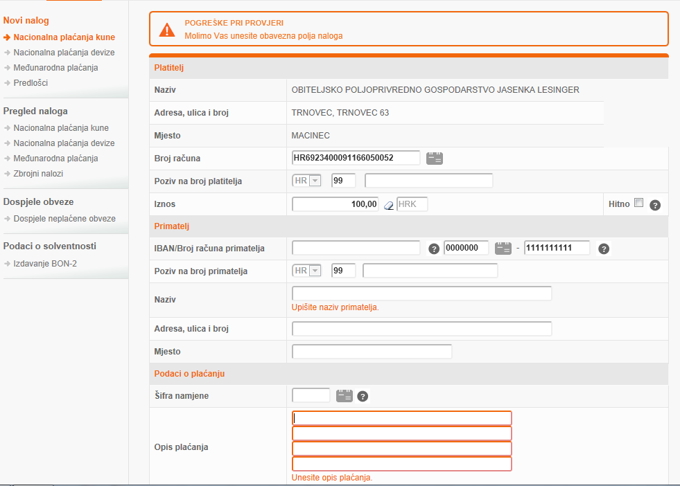

Pametne kartice
Sadržaj |
Uvod
Pametna kartica je plastična kartica koja u sebi ima ugrađen integrirani sklop. Dimenzijama je ista kao i kreditnie kartice. Glavne funkcije su joj autentifikacija, pohranjivanje podataka, vrednovanje, te mehanizam samo zaključavanja. Otporna je na vanjske napade te ne ovisi o potencijalno ranjivim vanjskim resursima. Baš zbog tih svojstava se pametne kartice često koriste u različitim aplikacijama koje zahtijevaju visoku razinu sigurnosne zaštite i autentifikacije. Na primjer, pametne kartice mogu služiti za identifikaciju vlasnika kartice, kao zdravstvena kartica, ili kao kreditna kartica koja omogućava financijske transakcije. Sve te aplikacije koriste osjetljive podatke spremljene na kartici kao što su biometrijski podaci o vlasniku. Uskoro će uobičajene kartice s magnetskom trakom biti potpuno zamijenjene.
Postoji niz načina ugrožavanja sigurnosti pametnih kartica. To ne znači da pametna kartica nije sigurna. Nigdje ne postoji 100%-tna sigurnost, pa tako ni kod pametnih kartica. Glavna odluka o tome da li je sustav siguran ili ne, ovisi o ispunjavanju sigurnosnih zahtjeva sustava.
Postoji nekoliko vrsta pametnih kartica, od običnih memorijskih kartica koje nemaju svojstvo procesiranja podataka, do kartica s procesorom i kriptografskim procesorom koje proširuju područje upotrebe kartice, ali i razinu sigurnosti. Najnovija vrsta kartica su bez kontaktne kartice koje, osim izbjegavanja problema s kontaktima na prihvatnim uređajima, donose i niz prednosti kojima postižu veću popularnost kod krajnjih korisnika.
--Sanja Lesinger 10:22, 5. lipnja 2013. (CEST)Sanja Lesinger
Kartični sustav kontrole pristupa
Današnji način života i poslovanja nužno donosi potrebu i za identifikacijom i pouzdanom sigurnošću. Za današnji moderni svijet to su najpoželjnije odlike jer bez njih su ugrožene brojne svakidašnje aktivnosti kao na primjer:
• Zaštita osobnih računala, prijenosnih računala, internetskih radnji i od upotrebe strane neovlaštenih osoba
• Sprečavanje krađe i krivotvorenja pri financijskim transakcijama, kod elektronskih radnji, plaćanje kreditnim karticama te plaćanje preko interneta
• Provjera identiteta pojedinca u dokumentima
Čimbenik pri postizanju sigurnosti je identifikacija osobe i provjera da li je osoba baš ta za koju se izdaje. Ova provjera mora biti pouzdana i brza.
Identifikacijske kartice
--Sanja Lesinger 10:31, 5. lipnja 2013. (CEST)
Pametne kartice
Pametne kartice je začeo francuski novinar Roland Moreno. On je 1974. registrirao idejne patente pametne kartice. A naziv "pametna kartica" osmislio je Roy Bright.
Francuska telefonska industrija izdaje 1984. godine prvu telefonsku karticu. Danas se ona koristi u javnoj telefoniji širom svijeta. Europay, Mastercard i Visa počinju s upotrebom pametne kartice u financijskoj industriji. 1994. godine izdana je EMV specifikacija. Mobilna telefonija 1998. godine izdaje GSM specifikaciju koja otvara novo područje primjene pametne kartice.
Pametna kartica je prijenosno, na napade relativno otporno računalo. Neke pametne kartice imaju mali ekran od tekućih kristala (LCD) i tipkovnicu za unos zaporke. Te kartice se još nazivaju “super pametne kartice“.
Razlikujemo nekoliko vrsta pametnih kartica:
Ovisno o čipu razlikujemo:
1. memorijske kartice
2. mikroprocesorske kartice
S obzir na prijenos podataka i mehanizama pristupa razlikujemo:
1. kontaktne kartice 2. bez kontaktne kartice
Osim ovih vrsta spomenula bih i pasivne kartice, one ne sadrže čip i ne svrstavamo ih u pametne kartice. Najpoznatije pasivne kartice su magnetske kartice. One na stražnjoj strani imaju magnetsku traku (zdravstvena iskaznica).
--Sanja Lesinger 10:38, 5. lipnja 2013. (CEST)
Podjela pametnih kartica
Pametne kartice se mogu razvrstati u nekoliko grupa. Ovisno o čipu razlikujemo memorijske kartice i mikroprocesorske kartice. S obzirom na prijenos podataka i mehanizam pristupa razlikujemo kontaktne, bez kontaktne i kombinirane kartice.
Podjela pametnih kartica ovisno o čipu
Pasivne kartice
Pasivne kartice ne sadrže čip. Njih ne svrstavamo u pametne kartice. Najpoznatije pasivne kartice su magnetske kartice s magnetskom trakom na stražnjoj strani (bankovne kartice, zdravstvene iskaznice...)
Memorijske kartice
Memorijske kartice su kartice koje nemaju vlastiti procesor. One ne mogu samostalno obrađivati podatke. Uvrštavamo ih u pametne kartice samo iz povijesnih razloga.
S obzirom na vrstu memorije razlikujemo tri tipa memorijskih kartica:
1. kartice s običnom memorijom (namijenjene su samo za
pohranjivanje podataka)
2. kartice s zaštićenom ili dijeljenom memorijom (sadrže jednostavne
logičke veze s kojima nadziru pristup podacima i upotrebljavaju se tamo
gdje nije potrebna visoka razina sigurnost podataka)
3. kartice s pohranjenom vrijednošću (telefonske kartice)
Memorijska kartica
Mikroprocesorske kartice
Pod pojmom pametne kartice uglavnom se misli na mikroprocesorske kartice zbog inteligencije koju pruža ugrađeni čip. Te su kartice sposobne same obrađivati podatke. Mikroprocesorske kartice koriste se u aplikacijama koje zahtijevaju sigurnost i privatnost podataka.
Mikroprocesorska kartica
Podjela pametnih kartica ovisno o načinu pistupa
Kontaktne kartice
Kontaktne kartice s vanjskim svijetom komuniciraju putem fizičkog komunikacijskog sučelja. Sučelje ostvaruje fizički i električni kontakt s uređajem za prihvat kartice(CAD uređajem). Kartica ne posjeduje unutrašnje napajanje i ona ne može generirati signal vremenskog vođenja.
Bez kontaktne
Bez kontaktne kartice s vanjskim svijetom komuniciraju putem antene ugrađene u tijelo kartice. Napajanje se izvodi pomoću baterije ugrađene u karticu ili elektormagnetske indukcije preko antene. Podaci se do CAD uređaja prenose elektromagnetskim poljem.
Prednost kontaktnih kartica u odnosu na bez kontaktne kartice je ta što su kontaktne kartice manje osjetljive na torzije i savijanja. Također, kod bez kontaktne kartice, postoji opasnost da se bez znanja vlasnika presretnu podaci ili izvedu kartične transakcije.
 Struktura bez kontaktne pametne kartice s čitačem
Struktura bez kontaktne pametne kartice s čitačem

Komunikacija bez kontaktne pametne kartice s čitačem
Bez kontaktne pametne kartice imaju nekoliko prednosti pred kontaktnim pametnim karticama:
1. Pouzdanost – kvarovi kod električnih uređaja se cesto događaju baš na
kontaktima zbog prljavštine i istrošenosti
2. Dulji životni vijek – zbog nepostojanja fizičkih kontakata, a samim time i izbjegavanja održavanja istih
3. Fleksibilnost – bez kontaktne pametne kartice mogu biti stavljene blizu čitača u bilo kojem smjeru i poziciji, za razliku od kontaktnih koje se u čitač moraju staviti u određenom smjeru
4. Praktičnost uporabe – čitač bez kontaktnih pametnih kartice može biti ugrađen ispod ili unutar bilo kakve nemetalne površine
5. Lagano održavanje - čitači bez kontaktnih pametnih kartica ne sadržavaju nikakve pomične dijelove čime je omogućeno lagano održavanje
6. Robusnost – čitači i bez kontaktne pametne kartice mogu podnositi teške vremenske uvjete i problematična okruženja pa su prikladne za korištenje u različitim okruženjima gdje mogu doći u kontakt s prljavštinom i ostalim neželjenim tvarima
Trenutna generacija pametnih kartica ima i neke druge nedostatke. Sporo se proizvode, proizvodni postupak je skup.
Hibridne pametne kartice
Hibridne pametne kartice posjeduju mogućnost rada kao kontaktne i bez kontaktne kartice. Na sebi imaju i magnetsku traku, te podržavaju tehnologiju s jedno ili dvodimenzionalnim bar kodom.
Napredne pametne kartice
Do sada opisane kartice su pasivne, one za svoj rad zahtijevaju vanjski izvor napajanja i terminal (čitač). Ta ograničenja dosta utječu na njihovu prikladnost za neke tipove aplikacija.
Napredne pametne kartice sadržavaju tipkovnicu i zaslon. One mogu funkcionirati kao potpuno zasebne jedinice ili se priključiti na računalo. Nedostatak naprednih pametnih kartica je visoka cijena, poteškoće kod usklađivanja s ISO standardom i male dimenzija tipkovnice na kartici.
Glavna prednost naprednih pametnih kartica je off-line funkcionalnost samovrednovanja. Za razliku od pasivnih kartica koja trebaju izvor napona od terminala, napredne pametne kartice se mogu koristi bio gdje.
--Sanja Lesinger 11:00, 5. lipnja 2013. (CEST)
Obilježja pametne kartice
Kontaktna obilježja
Specifikacija pametnih kartica određena je prema ISO 7810 standardu. Prema ovom standardu svaka pametna kartica se sastoji od procesora, ulazno-izlazne jedinice i memorije. Današnje pametne kartice uglavnom sadrže kripto - ko procesor koji služi za stvaranje i provjeru digitalnih potpisa te za kriptiranje podatak bilo asimetričnim ili simetričnim kriptografskim algoritmima.
Osnovno obilježje pametnih kartica je čip. Čip je krhak i podložan vanjskim uvjetima kao što su torzija i savijanje.
Pametna kartica ima 8 kontaktnih točaka:
1. Vcc kontakt – na ovaj kontakt se dovodi napajanje
2. GND – kontakt se koristi kao uzemljenje
3. RST – kontakt služi za resetiranje mikroprocesora
4. Vpp kontakt – koristi se kod starijih tipova kartica i on je opcionalan.
Niža razina je označavala pasivno stanje, dok se viša razina koristila kod pisanja u EEPROM.
5. I/O kontakt - služi za komunikaciju između kartica i vanjskog sustava i obratno
6. RFU kontakt – kontakt je rezerviran za buduću upotrebu
7. CLK kontakt – kontakt predstavlja signal vremenskog vođenja
Formati i dimenzije
Pametne kartice najčešće dolaze u tri fomata : ID-0 (85.6mm x 54mm x 0.76mm), ID-00 (66mm x 33mm x 0.76mm ) i ID-000 (25mm x 15 mm x 0.76mm). ID-0 je format kreditnih kartica a ID-000 je format GSM SIM kartica. Format ID-0 je najčešći te ga, osim kod kreditnih kartica susrećemo kod osobnih iskaznica. Format ID-0 prikazan je na slici.
--Sanja Lesinger 11:06, 5. lipnja 2013. (CEST)
Memorija
Pametne kartice sadrže tri tipa memorije:
1. trajnu upisnu memoriju,
2. trajnu upisno-ispisnu memoriju i
3. netrajnu upisno-ispisnu memoriju.
Najčešće korištene memorije su RAM, ROM i EEPROM.
RAM
Zbog svoje veličine i zbog ograničene površine čipa uvijek je prisutan zahtjev za što manjom količinom RAM memorije. Koristi kao privremeni radni prostor za pohranu i modifikaciju podataka. Bez napajanja gubi se informacija o sadržaju memorije.
ROM
Koristi za pohranu nepromjenjivog programskog koda. Zapisani podaci se mogu samo čitati. Bez prisutnosti napajanja zadržava svoje stanje.
EEPROM
Koristi za pohranu podataka i korisničkih aplikacija. Zadržava svoje stanje kad nema napajanja.Čitanje EEPROM-a je jednako brzo kao i čitanje kod RAM-a, samo što je pisanje u EEPROM 1000 puta sporije od pisanja u RAM.
--Sanja Lesinger 11:08, 5. lipnja 2013. (CEST)
Komunikacijski model
CAD uređaj
Pametna kartica komunicira s okolinom preko CAD uređaja.
Postoje dvije vrste CAD uređaja:
• terminal
• čitač kartica.
Čitač je povezan s računalom putem USB, serijskog, paralelnog ili PCMCIA sučelja. Terminali su računala koja čitač kartica imaju ugrađen kao vlastitu komponentu. Primjer terminala je bankomat. Osim funkcije čitača terminali posjeduju i mogućnost obrade podataka.
Komunikacija s računalom
Komunikacijski kanal između pametne kartice i računala podržava dvosmjernu komunikaciju, tj. prijenos podataka u oba smjera, no ne istovremeno. Dva računala međusobno komuniciraju razmjenjujući podatkovne pakete. Podatkovni paketi su inspirirani protokolima kao što su TCP i UDP. Pametna kartica komunicira s računalom na sličan način koristeći vlastiti format podatkovnih paketa - APDU protokol. Nakon što se kartica umetne u čitač njeni se kontakti mehanički povežu s čitačem. Nakon toga kartica automatski izvršava power on reset i šalje ATR poruku. Tom porukom kartica šalje vrijednosti parametara potrebnih za uspostavljanje međusobne komunikacije. Terminal obradi ATR i šalje naredbu. Kartica prima naredbu i šalje odgovor. Terminal izdaje naredbe, a kartica ih izvršava sve dok se kartica ne izvadi iz čitača. Nakon primitka ATR-a terminal, ako želi promijeniti neki od parametara, kartici šalje PTS naredbu. Na taj način terminal može promijeniti parametre komunikacijskog protokola, ali samo one koje dotična kartica dozvoljava. PTS naredba može se poslati samo nakon primitka ATR poruke.
APDU protokol
APDU protokol je komunikacijski protokol namijenjen za komunikaciju pametnih kartica i van kartičnih aplikacija. APDU format je definiran standardom ISO 7816-4.
Razlikujemo dva oblika APDU protokola:
• APDU naredba
• APDU odgovor
Kartična komunikacija temelji se na organizaciji sluga-gospodar. Kartica uvijek preuzima ulogu sluge, čeka APDU naredbu od računala te šalje APDU odgovor.
APDU naredba
Zaglavlje APDU naredbe sastoji se od 5 okteta: oznake razreda kojoj pripada naredba, oznaka naredbe, parametri naredbe (P1 i P2) i veličina podatkovnog dijela poruke u oktetima (Lc). Nakon zaglavlja APDU naredbe slijedi tijelo APDU naredbe. Tijelo je veličine određene Lc poljem zaglavlja. Nakon podatkovnog polja slijedi opcionalno Le polje koje pokazuje maksimalan broj okteta koji očekuje od aplikacije u sljedećem odgovoru.
APDU odgovor
APDU odgovor koji se sastoji od obaveznog zaglavlja i opcionalnog tijela. Zaglavlje se sastoji od polja SW1 i SW2 koji zajedno tvore statusnu riječ te opisuju u kojem se stanju kartica nalazi nakon što izvrši APDU naredbu. Ta dva okteta označavaju da li je naredba izvršena ili je došlo do pogreške. Tijelo je podatkovno polje čija je duljina određena Le poljem APDU naredbe.
TPDU protokol
TPDU protokol je prenosni protokol niže razine definiran standardom ISO 7816-3. Podatkovne strukture koje izmjenjuju kartica i računalo nazivaju se TPDU jedinice. Trenutačno su u kartičnim sustavima najraširenija dva tipa prijenosnih protokola: T=0 protokol i T=1 protokol. Oba protokola su asinkroni i dvosmjerni.
T = 0
T=0 protokol je oktet orijentiran, što znači da je najmanja prenesena jedinica jedan oktet. Zahvaljujući oktet orijentaciji protokola, prilikom detekcije pogreške u prijenosu odmah se zahtjeva ponovni prijenos netočnog okteta. Detekcija pogreške se bazira na paritetnom bitu koji se dodaje svakom poslanom oktetu.
T = 1
T=1 protokol je blok orijentiran. T=0 protokol smatra se zastarjelim jer nejasno odvaja aplikacijski i prijenosni sloj, dok T=1 protokol odvaja ta dva sloja ukalupljujući APDU poruke u TPDU jedinice.
T = 2
T=2 protokol se temelji na T=1 protokolu. Također je blok orijentiran. Razlika je u tome što T=2 protokol omogućuje istovremeni prijenos podataka u oba smjera.
--Sanja Florijanić 11:35, 5. lipnja 2013. (CEST)
Operacijski sustav kartice
Za razliku od operacijskih sustava na osobnim računalima, operacijski sustav kartice ne uključuje korisničko sučelje i nema mogućnost pristupa vanjskim jedinicama za pohranu podataka. Njegova osnovna namjena je prijenos podataka, kontrola izvršavanja naredbi, upravljanje datotekama, izvršavanje kriptografskih algoritama, provjera i kreiranje digitalnih potpisa. Standard ISO 7816-4 predstavlja temelj za većinu današnjih operacijskih sustava kartica. Zbog sve većih zahtjeva za pametnim karticama razvila se potreba za bržim razvojem kartičnih aplikacija. Brži razvoj kartičnih aplikacija ne smije ugroziti glavni razlog upotrebe pametnih kartica, njihovu sigurnost. Java Card tehnologija omogućuje da se programi pisani u Java programskom jeziku izvode na računalima ograničenih sredstava s jednakom sigurnošću kao i na računalima neograničenih sredstava. Razlika između Java kartica i ostalih kartica je podjela na razine s jasno određenim pravilima među njima.
Slika prikazuje podjelu na razine kod Java pametnih kartica
Slika prikazuje podjelu na razine kod ostalih pametnih kartica
--Sanja Florijanić 11:41, 5. lipnja 2013. (CEST)
Životni ciklus
Standard ISO 10202-1 razlikuje 5 glavnih faza u životnom ciklusu kartice.
Faza 1: Proizvodnja čipa i proizvodnja kartice
o dizajn čipa
o generacija operacijskog sustava kartice
o proizvodnja čipa i modula
o proizvodnja tijela kartice
o ugrađivanje modula u tijelo kartice
Faza 2: Priprema kartice
o završavanje operacijskog sustava kartice
Faza 3: Priprema aplikacije
o inicijalizacija aplikacije
o personalizacija aplikacije
Faza 4: Korištenje kartice
o aktiviranje aplikacije
o deaktiviranje aplikacije
Faza 5: Kraj korištenja kartice
o deaktiviranje aplikacije
o deaktiviranje kartice
--Sanja Florijanić 11:44, 5. lipnja 2013. (CEST)
Sigurnosni mehanizmi
Sklopovski sigurnosni aspekti
Sklopovi pametnih kartica nikad se ne proizvode od standardnih ćelija i često posjeduju lažne strukture čija je jedina svrha zbunjivanje potencijalnog napadača. Sabirnice unutar pametne kartice koje povezuju procesor, ROM, EEPROM i RAM su interne sabirnice, što znači da nikad ne izlaze iz čipa. Time je onemogućeno direktno priključivanje na linije sabirnice.
Kako bi se spriječilo bez kontaktno prisluškivanje ili interakcija s podacima na sabirnici, promet preko sabirnica često se kriptira.
Kako je sadržaj ROM-a čitljiv bit po bit uz pomoć optičkog mikroskopa, u pametnim karticama se koristi specijalni ionski usađen ROM čiji se sadržaj ne može pročitati niti uz pomoć ultraljubičaste svjetlosti.
Informacije sakupljene analizom električnog potencijala aktivnog čipa moguće je iskoristiti u svrhu izvođenja zaključaka o trenutnom sadržaju RAM-a. Smještanjem vodljivih metalnih slojeva iznad memorijskih ćelija postiže se da, ukoliko se ti slojevi uklone (npr. kemijskim urezivanjem), čip postaje neupotrebljiv. Osim toga prati se njihov električni otpor tako da čip automatski prestaje s radom ako dođe do oštećenja zaštitnog sloja. Ispod zaštitnih slojeva nalaze se i foto tranzistori koji dodatno detektiraju njihovo uklanjanje.
Postoji mogućnost čitanja RAM ćelija bez napajanja, ali to zahtjeva prethodno hlađenje ćelija na temperaturu ispod -60°C što uzrokuje da sadržaj RAM ćelija ostaje trajan. Stoga se tajni ključevi ne bi smjeli nepotrebno držati u RAM-u. Nakon njihovog pohranjivanja u RAM-u treba slijediti brisanje ili prepisivanje memorije novim vrijednostima.
U pametnim karticama slijed memorijskih lokacija RAM-a nikada nije linearan kao u ostalim računalnim sustavima. Fizički bliske memorijske ćelije predstavljaju logički neslijedne lokacije. Zbog toga nije dovoljno znati sam sadržaj ćelija već je potrebno znanje i o načinu adresiranja. Način adresiranja može biti unaprijed određen i strogo tajan ili pak programski riješen i dinamičan.
Pametne kartice nadziru naponsku razinu kako bi onemogućili DFA napade, frekvenciju radnog takta koja je dovedena izvana kako bi se onemogućilo drastično usporavanje rada kartice čime praćenje internih promjena postaje jednostavnije. Kako bi se onemogućili DPA napadi pametne kartice potrošnju električne energije reguliraju i održavaju stalnom.
Programski sigurnosni aspekti
S programske strane, pametne kartice također se odlikuju zavidnom razinom sigurnosti.
Dok su gore navedene sklopovske zaštite implementirane u tvornici i ne mogu se isključiti, programska zaštita najviše ovisi o programeru koji implementira kartične aplikacije.
Kao što je već navedeno, mikroprocesorske pametne kartice dijelimo na one s kripto koprocesorom i one bez kripto koprocesora. Kripto koprocesor je sklopovska podrška kriptiranju. Neke pametne kartice podržavaju samo simetrične kripto-algoritme (najčešće DES), bolje kartice podržavaju još i asimetrične (najčešće RSA), a najbolje još i funkcije za izračunavanje sažetka.
Ovisno o vrsti kartice postoji standardizirano programsko sučelje koje omogućuje iskorištavanje implementiranih kripto algoritama. Pametne kartice koje nemaju kripto koprocesor zahtijevaju od programera, koji želi stvoriti sigurni komunikacijski kanal, samostalno programsko implementiranje potrebnih algoritama ili nabavu nekih drugih implementacija.
Radi velike ograničenosti memorijskog prostora na pametnim karticama (tipično 32 KB ROM-a, 16 KB EEPROM-a i 1 KB RAM-a), često se ne implementiraju svi potrebni algoritmi čime čitava "besprijekorna" sigurnost pametnih kartica pada u vodu. Zbog toga se, za bilo kakvu ozbiljniju primjenu, pametne kartice bez kripto koprocesora ne upotrebljavaju.
--Sanja Florijanić 11:48, 5. lipnja 2013. (CEST)
Primjena pametnih kartica
Najčešća primjena pametnih kartica u identifikaciji osoba jest u sustavima kontrole pristupa. Ovakvi sustavi se najčešće koriste u velikim tvrtkama, gdje im jedan takav sustav uvelike olakšava kontrolu pristupa vlastitim resursima, tj. onemogućuje neovlašteni pristup. Ujedno olakšava praćenje vremena provedenog na radu za svakog zaposlenika.Večina sustava kontrole pristupa zamišljena je na takav način da određenim pojednicima dopusti prolaz kroz određenu zaustavnu točku, dok drugima onemogući prolaz kroz tu istu točku.
Sustav za kontrolu pristupa ostvaruje takvu identifikaciju na nekoliko načina:
• Identifikacija se vrši pomoću nećega što pojedinac posjeduje, pametna kartica
• Identifikacija se vrši pomoću znanja koje posjeduje specifični pojedinac, PIN
• Kombinacijom navedenih metoda identifikacije.
Ključne komponente susatva kontrole pristupa su:
• Uređaji za potvrđivanje; kartice, čitaći kartica, uređaj za unos PIN-a.
• Uređaji koji fizički zaključavaju kontrolnu točku, odnosno uređaji koji onemogućuju neovlašteni prolaz kontrolne točke.
• Kontrolna jedinica koja donosi odluke o dopuštanju pristupa u odnosu na dobivene informacije od strane uređaja za potvrđivanje.
• Programski paket preko kojeg se sustav ozvorno programira.
Kartice i čitaći kartica su jedini fizički vidljivi dijelovi sustava no u njima nije sadržan kompletni sustav, već su oni samo periferija kontrole pristupa. Kartica se provlaći ili umeće u čitać koji čita podatak sa kartice.Taj podatak je najčešće neki kontrolni broj. Pročitane podatke čitać šalje dalje kontrolnoj ploči koja te iste podatke obradi u smislu daljne analize i kontrole i proslijedi ih kontrolnoj jedinici na provjeru. Kontrolna jedinica tada postavlja upite na bazu podataka i uspoređuje primljene podatke sa podacima koji imaju pravo pristupa, a zapisani su u bazi podataka. Svaki ovaj upit se takođet zapisiva u bazu podataka i na taj način se omogućava praćenje tko je i kada htio proći kontrolnu točku. Ako se dobije podudarnost, kontrolna jednica šalje kontrolnoj ploči potvrdni odgovor kojeg kontrolna ploča proslijeđuje dalje do releja koji otključava kontrolnu točku.Ako kontrolna jednica pošalje negativan odgovor kontrolna točka ostaje zaključana.Danas je u upotrebi veliki broj različitih sustava pristupnih kartica i čitaća, ali sasigurnosnog stajališta, najslabija karika prirođena takvoj kontroli jest sama kartica. Naime očito je da kontrolni uređaj dopušta prolaz upravo kartici, neovisno o osobi koja tu karticu posjeduje tako da ukradena ili izgubljena kartica predstavlja ozbiljnu prijetnju sigurnostiukoliko se gubitak ne ustanovi na vrijeme te se preko pripadnog programskog paketa ne ukinu prava takve kartice. Također na kontrolnim točkama gdje je kartica jedina metodakontrole pristupa ne može se kontrolirati točan broj osoba koje su prošle u zaštićeno područje nakon što je kartici odobren pristup.
--Sanja Florijanić 11:49, 5. lipnja 2013. (CEST)
Praktični rad
Za razvijanje aplikacije je izabran programski jezik Java. Aplikacija obuhvaća osnovne operacije sa sigurnosnim mehanizmima koje posjeduje pametna kartica. Pametna kartica koja se koristi je PBZ kartica za Internet bankarstvo. Kartica je tipa mikroprocesorskih pametnih kartica koje imaju ugrađeni kriptografski koprocesor što joj omogućava obavljanje kriptografskih operacija na samoj kartici. Za čitač pametne kartice je SMART IC Card Reader EZ 100 PU čitač.
Rad aplikacije
Nakon što je obavljena personalizacija kartice, ona je spremna za korištenje u aplikaciji. Aplikaciju nije moguće koristi ako se ne unese ispravan PIN na početnom ekranu koji se pojavljuje nakon pokretanja same aplikacije.
Pokretanje aplikacije
Prije same prijave pojavljuje nam se Security Warning koji nas pita da li želimo pokrenuti ovu aplikaciju. Ako je želimo pokrenuti moramo staviti kvačicu u pravokutnik i kliknuti na tipku Run.


Prijava
Kada smo kliknuli na Run tada nam se pojavi prozor Prijava putem kojeg ćemo se prijaviti u aplikaciju.
Unošenje PIN-a
Nakon što smo kliknuli na gumb Prijava pojavljuje se login prozor pomoću kojeg se unosi PIN. PIN se sastoji od maksimalno osam znamenaka. Nakon unošenja PIN-a u odgovarajuće polje, pritisak na tipku Potvrdi se pokreće akcija provjere unesenog PIN-a, a tipkom Odustani se izlazi iz aplikacije. Sljedeća slika prikazuje login prozor za unos PIN-a.


Proces provjere PIN-a se sastoji od inicijalizacije modula, dohvaćanje liste slotova koji su prisutni u operacijskom sustavu,
odabira kartice u jednom od slotova (ako ih ima više od jednog), te otvaranje sjednice nad izabranom karticom. U slučaju
unošenja krivog PIN-a je ulaz u aplikaciju onemogućen i pojavljuje se sljedeći prozor.
U slučaju da se krivi PIN unese tri puta, kartica se blokira i više nije moguće koristiti aplikaciju sve dok se deblokira
kartica pomoću deblokacijskog PIN-a.
Popunjavanje elektroničke uplatnice
Ako je unesen ispravan PIN, počinju se čitati podaci s kartice (ključevi i certifikat) i prikazuje se prozor elektroničke uplatnice. Uplatnica je ispunjena inicijalnim podacima koji se dohvate iz baze podataka, a koji su vezani uz certifikat na kartici. Inicijalni podaci se ne mogu mijenjati, tj. jednoznačno su određeni vlasnikom kartice. Ostali podaci se upisuju u skladu s potrebama korisnika. Primjer ispunjene elektroničke uplatnice je prikazan na sljedećoj slici.
Kada smo popunili elektroničku uplatnicu možemo kliknuti na akciju „Provjeri“, koji nam provjerava ispravnost unesenih podataka
i da li smo sva obavezna polja popunili. Ukoliko je sve u redu nalog možemo spremiti odabirom akcije „Spremi“.
U slučaju da se neki podaci ne unesu u ispravnom obliku, ili se uopće ne unesu, nakon pritiska na tipku Provjeri
se pojavljuje određeno upozorenje koje opisuje razlog zašto uneseni podaci na uplatnici nisu ispravni.
Svi podatak koji se nalazi na uplatnici nakon pritiska na tipku Provjeri podliježe vrednovanju koje provjerava
njegov sadržaj i javlja pogrešku u slučaju krivog unošenja. Na sljedećoj slici je prikazan primjer takvih poruka kojima
se korisniku opisuje koji podaci nisu ispravni, te u kakvom formatu trebaju biti.

Ako su svi podaci uneseni u ispravnom obliku tada je nalog uspješno spremljen, zatim označimo kvadratić i uplatnicu šaljemo na potpis.


Kada je nalog poslan na potpisivanje, da bi završili transakciju moramo odabrati kvadratić i kliknuti na akciju „Potpiši i završi“,
i nakon toga nam je transakcija završena.


{kind=link}
{kind=link}
{kind=link}
![http://www.google.hr/search?q=Identifikacijske+kartice&bav=on.2,or.r_qf.&bvm=bv.47534661,d.bGE&biw=1440&bih=783&um=1&ie=UTF-8&hl=hr&tbm=isch&source=og&sa=N&tab=wi&ei=-vGwUf2qGqbx4QS1l4BI#um=1&hl=hr&tbm=isch&sa=1&q=pametne++kartice&oq=pametne++kartice&gs_l=img.3..0j0i24l5.88421.92020.0.92375.24.16.0.0.0.6.154.1491.11j5.16.0...0.0...1c.1.16.img.tUemId1lNgc&bav=on.2,or.r_qf.&bvm=bv.47534661,d.bGE&fp=5df9791727fc9f90&biw=1440&bih=783&facrc=_&imgrc=dpWzRPOoUSdmXM%3A%3Brssj5mMieIGXjM%3Bhttp%253A%252F%252Fweb.zpr.fer.hr%252Fergonomija%252F2005%252Fantoncic%252Fslike%252Fcards1.jpg%3Bhttp%253A%252F%252Fweb.zpr.fer.hr%252Fergonomija%252F2005%252Fantoncic%252Findex.html%3B277%3B289](http://www.google.hr/search?q=Identifikacijske+kartice&bav=on.2,or.r_qf.&bvm=bv.47534661,d.bGE&biw=1440&bih=783&um=1&ie=UTF-8&hl=hr&tbm=isch&source=og&sa=N&tab=wi&ei=-vGwUf2qGqbx4QS1l4BI#um=1&hl=hr&tbm=isch&sa=1&q=pametne++kartice&oq=pametne++kartice&gs_l=img.3..0j0i24l5.88421.92020.0.92375.24.16.0.0.0.6.154.1491.11j5.16.0...0.0...1c.1.16.img.tUemId1lNgc&bav=on.2,or.r_qf.&bvm=bv.47534661,d.bGE&fp=5df9791727fc9f90&biw=1440&bih=783&facrc=_&imgrc=dpWzRPOoUSdmXM%3A%3Brssj5mMieIGXjM%3Bhttp%253A%252F%252Fweb.zpr.fer.hr%252Fergonomija%252F2005%252Fantoncic%252Fslike%252Fcards1.jpg%3Bhttp%253A%252F%252Fweb.zpr.fer.hr%252Fergonomija%252F2005%252Fantoncic%252Findex.html%3B277%3B289){kind=link}
{kind=link}
{kind=link}
![http://www.google.hr/search?q=Identifikacijske+kartice&bav=on.2,or.r_qf.&bvm=bv.47534661,d.bGE&biw=1440&bih=783&um=1&ie=UTF-8&hl=hr&tbm=isch&source=og&sa=N&tab=wi&ei=-vGwUf2qGqbx4QS1l4BI#um=1&hl=hr&tbm=isch&sa=1&q=memorijska+pametna+kartica&oq=memorijska+pametna+kartica&gs_l=img.3...5853.7091.5.7400.8.8.0.0.0.0.100.646.7j1.8.0...0.0...1c.1.16.img.b2p7wMKAJi0&bav=on.2,or.r_qf.&bvm=bv.47534661,d.bGE&fp=5df9791727fc9f90&biw=1440&bih=783&facrc=_&imgrc=mFkMTCgZ0PRt-M%3A%3BYSBnmnoCb8MSeM%3Bhttp%253A%252F%252Fweb.zpr.fer.hr%252Fergonomija%252F2005%252Fantoncic%252Fslike%252Ftelefonska_kartica.jpg%3Bhttp%253A%252F%252Fweb.zpr.fer.hr%252Fergonomija%252F2005%252Fantoncic%252Fpodjela_cip.html%3B91%3B150](http://www.google.hr/search?q=Identifikacijske+kartice&bav=on.2,or.r_qf.&bvm=bv.47534661,d.bGE&biw=1440&bih=783&um=1&ie=UTF-8&hl=hr&tbm=isch&source=og&sa=N&tab=wi&ei=-vGwUf2qGqbx4QS1l4BI#um=1&hl=hr&tbm=isch&sa=1&q=memorijska+pametna+kartica&oq=memorijska+pametna+kartica&gs_l=img.3...5853.7091.5.7400.8.8.0.0.0.0.100.646.7j1.8.0...0.0...1c.1.16.img.b2p7wMKAJi0&bav=on.2,or.r_qf.&bvm=bv.47534661,d.bGE&fp=5df9791727fc9f90&biw=1440&bih=783&facrc=_&imgrc=mFkMTCgZ0PRt-M%3A%3BYSBnmnoCb8MSeM%3Bhttp%253A%252F%252Fweb.zpr.fer.hr%252Fergonomija%252F2005%252Fantoncic%252Fslike%252Ftelefonska_kartica.jpg%3Bhttp%253A%252F%252Fweb.zpr.fer.hr%252Fergonomija%252F2005%252Fantoncic%252Fpodjela_cip.html%3B91%3B150){kind=link}
{kind=link}
![http://www.google.hr/search?q=Identifikacijske+kartice&bav=on.2,or.r_qf.&bvm=bv.47534661,d.bGE&biw=1440&bih=783&um=1&ie=UTF-8&hl=hr&tbm=isch&source=og&sa=N&tab=wi&ei=-vGwUf2qGqbx4QS1l4BI#um=1&hl=hr&tbm=isch&sa=1&q=mikroprocesorska+pametna+kartica&oq=mikroprocesorska+pametna+kartica&gs_l=img.3...38524.43906.7.44575.26.21.1.0.0.4.169.1759.18j3.21.0...0.0...1c.1.16.img.l6YKp-61IlY&bav=on.2,or.r_qf.&bvm=bv.47534661,d.bGE&fp=5df9791727fc9f90&biw=1440&bih=783&facrc=_&imgrc=XPYJXNWeSKfJkM%3A%3BYSBnmnoCb8MSeM%3Bhttp%253A%252F%252Fweb.zpr.fer.hr%252Fergonomija%252F2005%252Fantoncic%252Fslike%252FAmericanBlueCard.gif%3Bhttp%253A%252F%252Fweb.zpr.fer.hr%252Fergonomija%252F2005%252Fantoncic%252Fpodjela_cip.html%3B160%3B100](http://www.google.hr/search?q=Identifikacijske+kartice&bav=on.2,or.r_qf.&bvm=bv.47534661,d.bGE&biw=1440&bih=783&um=1&ie=UTF-8&hl=hr&tbm=isch&source=og&sa=N&tab=wi&ei=-vGwUf2qGqbx4QS1l4BI#um=1&hl=hr&tbm=isch&sa=1&q=mikroprocesorska+pametna+kartica&oq=mikroprocesorska+pametna+kartica&gs_l=img.3...38524.43906.7.44575.26.21.1.0.0.4.169.1759.18j3.21.0...0.0...1c.1.16.img.l6YKp-61IlY&bav=on.2,or.r_qf.&bvm=bv.47534661,d.bGE&fp=5df9791727fc9f90&biw=1440&bih=783&facrc=_&imgrc=XPYJXNWeSKfJkM%3A%3BYSBnmnoCb8MSeM%3Bhttp%253A%252F%252Fweb.zpr.fer.hr%252Fergonomija%252F2005%252Fantoncic%252Fslike%252FAmericanBlueCard.gif%3Bhttp%253A%252F%252Fweb.zpr.fer.hr%252Fergonomija%252F2005%252Fantoncic%252Fpodjela_cip.html%3B160%3B100){kind=link}
{kind=link}
{kind=link}
![http://www.google.hr/search?q=Identifikacijske+kartice&bav=on.2,or.r_qf.&bvm=bv.47534661,d.bGE&biw=1440&bih=783&um=1&ie=UTF-8&hl=hr&tbm=isch&source=og&sa=N&tab=wi&ei=-vGwUf2qGqbx4QS1l4BI#um=1&hl=hr&tbm=isch&sa=1&q=bezkontaktne+kartice&oq=bezkontaktne+kartice&gs_l=img.3..0i10i24.13992.23121.24.23342.61.38.2.0.0.13.166.3298.31j6.37.0...0.0...1c.1.16.img.8uL4qfYt_-0&bav=on.2,or.r_qf.&bvm=bv.47534661,d.bGE&fp=5df9791727fc9f90&biw=1440&bih=783&facrc=_&imgrc=Ak8rfzIQZbd_lM%3A%3BXii8aS-V640nWM%3Bhttp%253A%252F%252Fweb.zpr.fer.hr%252Fergonomija%252F2005%252Fantoncic%252Fslike%252Fkontaktna.gif%3Bhttp%253A%252F%252Fweb.zpr.fer.hr%252Fergonomija%252F2005%252Fantoncic%252Fpodjela_pristup.html%3B228%3B191](http://www.google.hr/search?q=Identifikacijske+kartice&bav=on.2,or.r_qf.&bvm=bv.47534661,d.bGE&biw=1440&bih=783&um=1&ie=UTF-8&hl=hr&tbm=isch&source=og&sa=N&tab=wi&ei=-vGwUf2qGqbx4QS1l4BI#um=1&hl=hr&tbm=isch&sa=1&q=bezkontaktne+kartice&oq=bezkontaktne+kartice&gs_l=img.3..0i10i24.13992.23121.24.23342.61.38.2.0.0.13.166.3298.31j6.37.0...0.0...1c.1.16.img.8uL4qfYt_-0&bav=on.2,or.r_qf.&bvm=bv.47534661,d.bGE&fp=5df9791727fc9f90&biw=1440&bih=783&facrc=_&imgrc=Ak8rfzIQZbd_lM%3A%3BXii8aS-V640nWM%3Bhttp%253A%252F%252Fweb.zpr.fer.hr%252Fergonomija%252F2005%252Fantoncic%252Fslike%252Fkontaktna.gif%3Bhttp%253A%252F%252Fweb.zpr.fer.hr%252Fergonomija%252F2005%252Fantoncic%252Fpodjela_pristup.html%3B228%3B191){kind=link}
{kind=link}
{kind=link}
![http://www.google.hr/search?q=Identifikacijske+kartice&bav=on.2,or.r_qf.&bvm=bv.47534661,d.bGE&biw=1440&bih=783&um=1&ie=UTF-8&hl=hr&tbm=isch&source=og&sa=N&tab=wi&ei=-vGwUf2qGqbx4QS1l4BI#um=1&hl=hr&tbm=isch&sa=1&q=kontakt+obilje%C5%BEja+pametnih+kartica&oq=kontakt+obilje%C5%BEja+pametnih+kartica&gs_l=img.3...3118.6703.28.6913.17.17.0.0.0.0.120.1341.16j1.17.0...0.0...1c.1.16.img.ZJW79TvjAaY&bav=on.2,or.r_qf.&bvm=bv.47534661,d.bGE&fp=5df9791727fc9f90&biw=1440&bih=783&facrc=_&imgrc=f3hl_uvPrv5etM%3A%3BMSyD9RM3a-vLBM%3Bhttp%253A%252F%252Fweb.zpr.fer.hr%252Fergonomija%252F2005%252Fantoncic%252Fslike%252Fchip.jpg%3Bhttp%253A%252F%252Fweb.zpr.fer.hr%252Fergonomija%252F2005%252Fantoncic%252Fsvojstva.html%3B91%3B80](http://www.google.hr/search?q=Identifikacijske+kartice&bav=on.2,or.r_qf.&bvm=bv.47534661,d.bGE&biw=1440&bih=783&um=1&ie=UTF-8&hl=hr&tbm=isch&source=og&sa=N&tab=wi&ei=-vGwUf2qGqbx4QS1l4BI#um=1&hl=hr&tbm=isch&sa=1&q=kontakt+obilje%C5%BEja+pametnih+kartica&oq=kontakt+obilje%C5%BEja+pametnih+kartica&gs_l=img.3...3118.6703.28.6913.17.17.0.0.0.0.120.1341.16j1.17.0...0.0...1c.1.16.img.ZJW79TvjAaY&bav=on.2,or.r_qf.&bvm=bv.47534661,d.bGE&fp=5df9791727fc9f90&biw=1440&bih=783&facrc=_&imgrc=f3hl_uvPrv5etM%3A%3BMSyD9RM3a-vLBM%3Bhttp%253A%252F%252Fweb.zpr.fer.hr%252Fergonomija%252F2005%252Fantoncic%252Fslike%252Fchip.jpg%3Bhttp%253A%252F%252Fweb.zpr.fer.hr%252Fergonomija%252F2005%252Fantoncic%252Fsvojstva.html%3B91%3B80){kind=link}
{kind=link}
![http://www.google.hr/search?q=Identifikacijske+kartice&bav=on.2,or.r_qf.&bvm=bv.47534661,d.bGE&biw=1440&bih=783&um=1&ie=UTF-8&hl=hr&tbm=isch&source=og&sa=N&tab=wi&ei=-vGwUf2qGqbx4QS1l4BI#um=1&hl=hr&tbm=isch&sa=1&q=kontaktna+pametna+kartica&oq=kontaktna+pametna+kartica&gs_l=img.3...8655.10023.11.10323.8.8.0.0.0.0.115.718.5j3.8.0...0.0...1c.1.16.img.HPqg-8t1dJk&bav=on.2,or.r_qf.&bvm=bv.47534661,d.bGE&fp=5df9791727fc9f90&biw=1440&bih=783&facrc=_&imgrc=azjWIB8ALgmNEM%3A%3BMSyD9RM3a-vLBM%3Bhttp%253A%252F%252Fweb.zpr.fer.hr%252Fergonomija%252F2005%252Fantoncic%252Fslike%252Fvelicina.gif%3Bhttp%253A%252F%252Fweb.zpr.fer.hr%252Fergonomija%252F2005%252Fantoncic%252Fsvojstva.html%3B378%3B274](http://www.google.hr/search?q=Identifikacijske+kartice&bav=on.2,or.r_qf.&bvm=bv.47534661,d.bGE&biw=1440&bih=783&um=1&ie=UTF-8&hl=hr&tbm=isch&source=og&sa=N&tab=wi&ei=-vGwUf2qGqbx4QS1l4BI#um=1&hl=hr&tbm=isch&sa=1&q=kontaktna+pametna+kartica&oq=kontaktna+pametna+kartica&gs_l=img.3...8655.10023.11.10323.8.8.0.0.0.0.115.718.5j3.8.0...0.0...1c.1.16.img.HPqg-8t1dJk&bav=on.2,or.r_qf.&bvm=bv.47534661,d.bGE&fp=5df9791727fc9f90&biw=1440&bih=783&facrc=_&imgrc=azjWIB8ALgmNEM%3A%3BMSyD9RM3a-vLBM%3Bhttp%253A%252F%252Fweb.zpr.fer.hr%252Fergonomija%252F2005%252Fantoncic%252Fslike%252Fvelicina.gif%3Bhttp%253A%252F%252Fweb.zpr.fer.hr%252Fergonomija%252F2005%252Fantoncic%252Fsvojstva.html%3B378%3B274){kind=link}
{kind=link}
![http://www.google.hr/search?q=Identifikacijske+kartice&bav=on.2,or.r_qf.&bvm=bv.47534661,d.bGE&biw=1440&bih=783&um=1&ie=UTF-8&hl=hr&tbm=isch&source=og&sa=N&tab=wi&ei=-vGwUf2qGqbx4QS1l4BI#um=1&hl=hr&tbm=isch&sa=1&q=memorija+pametnih+kartica&oq=memorija+pametnih+kartica&gs_l=img.3...50530.54534.30.54850.27.18.0.0.0.6.133.1442.17j1.18.0...0.0...1c.1.16.img.1oA8k6oX5jA&bav=on.2,or.r_qf.&bvm=bv.47534661,d.bGE&fp=5df9791727fc9f90&biw=1440&bih=783&facrc=_&imgrc=FVPbzrhkxDizwM%3A%3BDfhdXI84HE3C0M%3Bhttp%253A%252F%252Fweb.zpr.fer.hr%252Fergonomija%252F2005%252Fantoncic%252Fslike%252Fmemorije.gif%3Bhttp%253A%252F%252Fweb.zpr.fer.hr%252Fergonomija%252F2005%252Fantoncic%252Fmemorija.html%3B252%3B89](http://www.google.hr/search?q=Identifikacijske+kartice&bav=on.2,or.r_qf.&bvm=bv.47534661,d.bGE&biw=1440&bih=783&um=1&ie=UTF-8&hl=hr&tbm=isch&source=og&sa=N&tab=wi&ei=-vGwUf2qGqbx4QS1l4BI#um=1&hl=hr&tbm=isch&sa=1&q=memorija+pametnih+kartica&oq=memorija+pametnih+kartica&gs_l=img.3...50530.54534.30.54850.27.18.0.0.0.6.133.1442.17j1.18.0...0.0...1c.1.16.img.1oA8k6oX5jA&bav=on.2,or.r_qf.&bvm=bv.47534661,d.bGE&fp=5df9791727fc9f90&biw=1440&bih=783&facrc=_&imgrc=FVPbzrhkxDizwM%3A%3BDfhdXI84HE3C0M%3Bhttp%253A%252F%252Fweb.zpr.fer.hr%252Fergonomija%252F2005%252Fantoncic%252Fslike%252Fmemorije.gif%3Bhttp%253A%252F%252Fweb.zpr.fer.hr%252Fergonomija%252F2005%252Fantoncic%252Fmemorija.html%3B252%3B89){kind=link}
{kind=link}
{kind=link}
{kind=link}
{kind=link}
{kind=link}
![http://www.google.hr/search?q=Identifikacijske+kartice&bav=on.2,or.r_qf.&bvm=bv.47534661,d.bGE&biw=1440&bih=783&um=1&ie=UTF-8&hl=hr&tbm=isch&source=og&sa=N&tab=wi&ei=-vGwUf2qGqbx4QS1l4BI#um=1&hl=hr&tbm=isch&q=smart+ic+card+reader+ez100pu&spell=1&sa=X&ei=K_WwUen-CKjk4QT2-YAQ&ved=0CEoQBSgA&bav=on.2,or.r_qf.&bvm=bv.47534661,d.bGE&fp=5df9791727fc9f90&biw=1440&bih=783&facrc=_&imgrc=X8GBXMJ_w4veaM%3A%3BXmY5_Z6Pl5hvjM%3Bhttp%253A%252F%252Fthumbs1.ebaystatic.com%252Fd%252Fl225%252Fm%252FmqsYwHqKr2Qj5TD0uB_c7HQ.jpg%3Bhttp%253A%252F%252Fwww.ebay.co.uk%252Fbhp%252Fsmart-card-reader-writer%253F_trksid%253Dp2047675.m2392%3B225%3B195](http://www.google.hr/search?q=Identifikacijske+kartice&bav=on.2,or.r_qf.&bvm=bv.47534661,d.bGE&biw=1440&bih=783&um=1&ie=UTF-8&hl=hr&tbm=isch&source=og&sa=N&tab=wi&ei=-vGwUf2qGqbx4QS1l4BI#um=1&hl=hr&tbm=isch&q=smart+ic+card+reader+ez100pu&spell=1&sa=X&ei=K_WwUen-CKjk4QT2-YAQ&ved=0CEoQBSgA&bav=on.2,or.r_qf.&bvm=bv.47534661,d.bGE&fp=5df9791727fc9f90&biw=1440&bih=783&facrc=_&imgrc=X8GBXMJ_w4veaM%3A%3BXmY5_Z6Pl5hvjM%3Bhttp%253A%252F%252Fthumbs1.ebaystatic.com%252Fd%252Fl225%252Fm%252FmqsYwHqKr2Qj5TD0uB_c7HQ.jpg%3Bhttp%253A%252F%252Fwww.ebay.co.uk%252Fbhp%252Fsmart-card-reader-writer%253F_trksid%253Dp2047675.m2392%3B225%3B195){kind=link}
{kind=link}
{kind=link}
{kind=link}
{kind=link}
{kind=link}
{kind=link}
{kind=link}
Provođenje transakcija
U slučaju da su svi podaci uneseni na uplatnici uspješno prošli vrednovanje, nalog koji sadržava unesene podatke se zajedno sa certifikatom šalje k serveru koji ga obrađuje. Zbog pojednostavljenja aplikacije je obrada podataka od server predstavljena jednom posebnom metodom koja prima digitalno potpisani nalog i certifikat, te verificira taj potpis i na osnovu rezultata verifikacije obavlja ili ne obavlja transakciju. U slučaju kad verifikacija prođe bez pogreške, na ekranu se pojavljuje prozor s porukom koja sadrži rezultat verifikacije i stanje računa platitelja nakon obavljanja novčane transakcije. Taj prozor je prikazan na sljedećoj slici.
{kind=link}
U slučaju da smo primijetili kakvu pogrešku možemo sa akcijom „Opozovi“ prekinuti transakciju.
U slučaju da verifikacija digitalnog potpisa ne prođe, tj. kad dođe do vanjskog napada na integritet naloga, pojavljuje se poruka
koja poručuje korisniku da je transakcija odbijena i da plaćanje nije obavljeno. Sljedeća slika prikazuje taj slučaj.
--Sanja Lesinger 12:07, 5. lipnja 2013. (CEST)
Zaključak
U radu je detaljno opisana pametna kartica kao sigurni medij za pohranjivanje podataka, ali i kao alat za obavljanje kriptografskih operacija. Glavni dio pametne kartice je mikroprocesor. Upravljanjem datotečnim sustavom omogućava korištenje podataka na kartici samo od strane vlasnika kartice koji posjeduje PIN.
PIN je vrlo bitan faktor sigurnosti pametnih kartica. Bez njega nije moguće koristiti karticu. Osim korisničkog PIN-a, postoji i deblokacijski PIN kojim se deblokira kartica u slučaju prekoračenja dozvoljenog broja unošenja krivog PIN-a.
Pametna kartica se može istovremeno koristiti za obavljanje bankovnih transakcija,
zbog svoje raznolikosti i velikog kapaciteta za pohranjivanje podataka može
pohranjivati sve identifikacijske dokumente na jednom mjestu. Zbog toga se takva
multiaplikacijska kartica naziva i elektronički novčanik. Osim toga se mogu
koristiti i za pohranjivanje vrlo osjetljivih podataka koji zahtijevaju vrlo visoku
razinu sigurnosti.
Kako se pametne kartice koriste u aplikacijama koje izvode transakcije vrlo visoke novčane vrijednosti, vrlo brzo su postale meta kriminalaca. Ako se kriminalci uspiju domoći same pametne kartice, raznim postupcima se mogu domoći vrlo osjetljivih podataka koji su spremljeni na samoj kartici. Njime onda mogu obavljati transakcije u ime vlasnika ukradene kartice. U slučaju da kriminalci nemaju karticu, onda se njihov napad bazira na probijanju kripografskih algoritama kriptoanalizom.
Za primjer korištenja pametne kartice je uzeta pojednostavljena aplikacija elektroničnog plaćanja. Aplikacijom je prikazano kako se obavlja autentifikacija korisnika unošenjem PIN-a, čitanje podataka s kartice, te potpisivanje i verificiranje digitalno potpisanog naloga za elektroničko plaćanje.
--Sanja Lesinger 12:13, 5. lipnja 2013. (CEST)
Literatura
http://www.kartice.hr/tehnologija/smart-kartice-chip-2/
C:\Users\sanjalesinger\Desktop\Fax\3 godina\biometrija u hrvatskoj i svijetu\Pametne kartice biometrija.mht
http://hr.wikipedia.org/wiki/Internetsko_bankarstvo
http://autopoiesis.foi.hr/wiki.php?name=KM+-+Tim+27&parent=NULL&page=Pametna%20zdravstvena%20kartica
http://spvp.zesoi.fer.hr/seminari/2004/smart_card-sstuglin.pdf
--Sanja Lesinger 14:08, 5. lipnja 2013. (CEST)
--Sanja Florijanić 14:10, 5. lipnja 2013. (CEST)